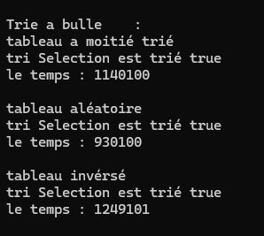
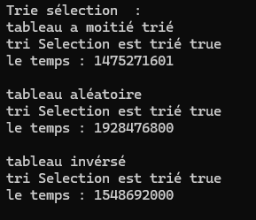
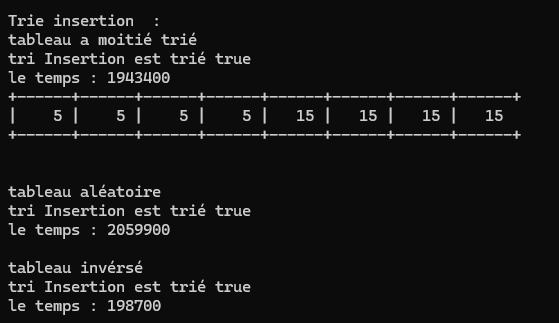

Description du projet
Projet d'introduction à la gestion de projet informatique (SAE 1.02). Objectif : découvrir les bases de la conduite de projet et de la collaboration en équipe.
Nous avons également étudié différents types de tri : tri par sélection, tri à bulles et tri par insertion, afin de comparer leurs fonctionnements et leurs performances.
Grille d'évaluation - Compétence 2 : Optimiser des applications
1ère année B.U.T. Informatique - Portfolio S2
juin 2022
GRILLE D'ÉVALUATION PORTFOLIO
Compétence 2 : Optimiser des applications
L’étudiant a agi et il est mieux à même d’identifier ses aptitudes pour appréhender, proposer et construire des applications informatiques optimisées car :
- Il est capable d’analyser un problème avec méthode (découpage en éléments algorithmiques simples, structure de données (AC 1)), en formalisant et modélisant des situations complexes (CE 1).
- Il est capable de comparer des algorithmes pour des problèmes classiques (AC 2), en recensant les algorithmes et les structures de données usuels (CE 2).
- Il a appris à justifier ses choix et à valider les résultats (CE 4).



Compétences mobilisées
- Compétence 2 : Optimiser des applications informatiques